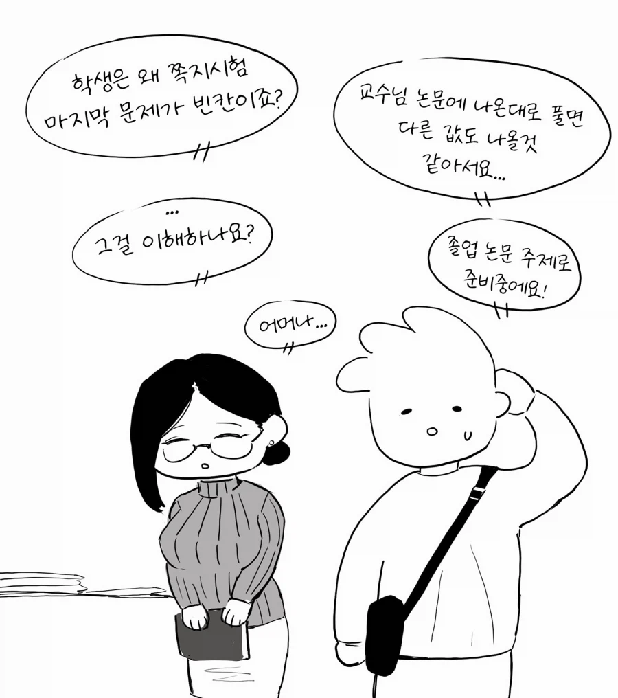

교수 : 오호. 그걸 이해했단 말인가? 학부생이?

교수 : 오호. 그걸 이해했단 말인가? 학부생이?
??? : 여보~ 오늘은 보강때문에 늦어~ 애랑 먼저 밥 먹고 애 먼저 재워~
오 이번노예는 쓸만하겠는걸.

볼 때마다 다른 값도 나올 것 같아서 빈칸으로 냈다는 거는 무슨 의미인지 잘 모르겠구만.
뭐 다른 문제들은 잘 풀었는데 한문제만 안썻나보지
교수는 예전 논문 기준으로 문제를 냈는데 학생은 교수의 최신 논문 기준으로도 봤겠지
너는 대학원생 탈락이다.
나도 이해가 안됨 ㅋㅋ
저 교수가 기존 정립된 접근방식을 거부하는 사파인건가?
아무래도 복수 정답 가능성이 있으면 답을 둘 다 적는 것이 맞지.ㅋㅋ 내가 보기엔 그냥 대학원생 밈을 그려보고 싶었던 것이 아닌가 싶어.
교수가 기존 통념과 다른 선구적인 공식이 담긴 논문을 발표했는데 그걸 쓰면 복수정답 여지가 있다는 정도의 설정
소년이 잘못하면 소년원에 갑니다
대학생이 잘못하면...?
이새끼들 대학 다녀 본 적이 없네
5060 노괴들이 대학 교수인데
완전 없다고는 못해
부교수 한 분 있었는데
30대 후반에 관리 엄청 잘 된
미중년 교수 있었음
30대 후반 중년? 30대 후반 중년? 30대 후반 중년? 30대 후반 중년?
질식사
너가 꼬셨어
너 납치된거야
이건 화간임